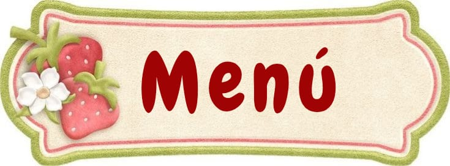

Imágenes
Hola mundo
Hola mundo
Hola mundo
Hola mundo
Sonido
Video
Hipervínculos
Video de los Backyardigans
Imagen de HK en movimiento


 Hola mundo Hola mundo Hola mundo Hola mundo
Hola mundo Hola mundo Hola mundo Hola mundo